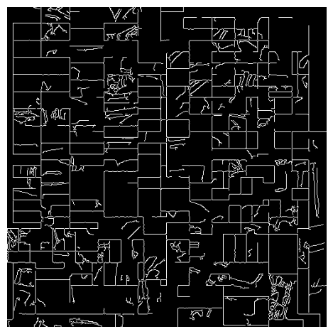
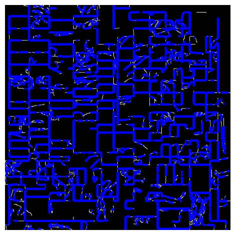

from context import segmentationtools
import segmentationtools.fseg as fseg
import cv2
import time
import numpy as np
import math
import matplotlib.pyplot as plt
Jupyter environment detected. Enabling Open3D WebVisualizer.
[Open3D INFO] WebRTC GUI backend enabled.
[Open3D INFO] WebRTCWindowSystem: HTTP handshake server disabled.
time0 = time.time()
# an example of using Fseg
# read image
img = cv2.imread('../../../localfiles/Matterport/livingroom\detailZoom.jpg', 0)
img = cv2.resize(img, (512, 512))
windowSize = 10
omegaVal = 0.4
# define filter bank and apply to image. for color images, convert rgb to grey scale and then apply filter bank
filter_list = [('log', .5, [3, 3]), ('log', 1, [5, 5]),
('gabor', 1.5, 0), ('gabor', 1.5, math.pi/2), ('gabor', 1.5, math.pi/4), ('gabor', 1.5, -math.pi/4),
('gabor', 2.5, 0), ('gabor', 2.5, math.pi/2), ('gabor', 2.5, math.pi/4), ('gabor', 2.5, -math.pi/4)
]
filter_out = fseg.image_filtering(img, filter_list=filter_list)
# include original image as one band
Ig = np.concatenate((np.float32(img.reshape((img.shape[0], img.shape[1], 1))), filter_out), axis=2)
# run segmentation. try different window size, with and without nonneg constraints
seg_out = fseg.Fseg(Ig, ws=windowSize, segn=0, omega=omegaVal, nonneg_constraint=False)
print ('FSEG runs in %0.2f seconds. ' % (time.time() - time0))
# show results
fig, ax = plt.subplots(ncols=2, sharex=True, sharey=True, figsize=(12, 6))
ax[0].imshow(img, cmap='gray')
ax[1].imshow(seg_out, cmap='gray')
plt.tight_layout()
plt.show()
Estimated segment number: 4
FSEG runs in 5.32 seconds.
from context import segmentationtools as st
# perform Canny edge detection to find sharp gradients
dst = cv2.Canny(img, 50, 150, None, 3)
dstp = cv2.cvtColor(dst, cv2.COLOR_GRAY2BGR)
st.show_img(dstp)

dstp2 = cv2.cvtColor(dst, cv2.COLOR_GRAY2BGR)
linesP = cv2.HoughLinesP(dst, 1, np.pi / 360, 30, None, 0, 0)
if linesP is not None:
for i in range(0, len(linesP)):
l = linesP[i][0]
cv2.line(dstp2, (l[0], l[1]), (l[2], l[3]), (0,0,255), 3, cv2.LINE_AA)
st.show_img(dstp2)
